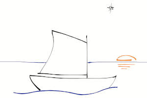

Webdar
Webdar is a single executable of a few megabytes only, bundling:
- A Web server (HTTP and HTTPS) for
- The libdar library to provide the rich backup feature set of Disk Archive:
- Any backup type: Full, differential, incremental, decremental
- Able to make a binary delta (and this, recursively) to avoid resaving a modified large file
- Saving all inode types (plain files, directories, char dev, block dev, symlinks, sockets, door inodes...)
- taking care of hard links (on files, char dev, block dev... and even hardlinked symlinks(!)
- handling and restoring sparse files
- Extended Attributes, like MacOS file forks, Linux ACL, SELinux, user attributes...
- A backup can be a single file or many files of given size, called slices
- Large set of compression algorithms available gzip, bzip2, lzo, xz/lzma, zstd, lz4
- Selective compression to avoid compressing already compressed files and provide more robustness to backups
- Strong encryption, with Key Derivation Function, salt, and parametrable iteration counter (argon2, SHA512...)
- Hashing per slice computed before the slice is written to disk (md5, sha1, sha512, whirlpool)
- Truncated backup can be repaired
- The table of content, called catalog can be isolated for backup redundancy but also
to ease incremental and differential backups
- Very fast restoration of a few files, fetching only the necessary data within possibily petabytes of data
- Supports a sequential read mode suitable to tape media
- Backup merging and subsetting without the need to restore any data
- Multi-threaded compression and encryption
- and more features... see Dar/libdar home page
- An FTP and SFTP client to avoid bothering with local disk space and backup transfer as well as to ease data restoration
- The ability to set user configurations on local disk and/or downloadable/uploadable through the HTTP/HTTPS session.
Download
All packages are GPG signed by Denis Corbin the Author of Dar, Libdar, Libthreadar and now Webdar.
Source code package and statically linked binaries
Source package as well as statically linked version (a single executable of ~ 5 MiB)
for x86_64 and ARM Linux OS (whatever the distro is) are provided with signature at
Sourceforge
To build Webdar from the source code, thanks to read the INSTALL file enclosed within the source package for building instructions.
Distro packages?
Dar/Libdar exists since year 2002 and since then has been taken into consideration by many Distros, like for example:
Webdar being a new-born software it may take time before distros consider it and eventually
decide to make a package of it. This will also depend on the interest their user will find in Webdar...
I have no weight for this decision. And waiting for this possibility, you can still use the
statically linked version of Webdar I provide (or compile Webdar yourself which is not
complicated). Statically linked version of Webdar only need a Linux system with the CPU type they have
been built for (x86_64 and ARM64 for now), they are distro independent.
Documentation
The best approach of Webdar is probably to start following the Tutorial,
eventually having a Webdar running beside to experiment, reproduce and
explore more broadly the available options.
A high level view of Libdar features
and the Dar/Libdar documentation
Webdar Software Internal Documentation
Stay tuned
For now all communcations and exchanges are planned to be provided by the Gitub Discussions